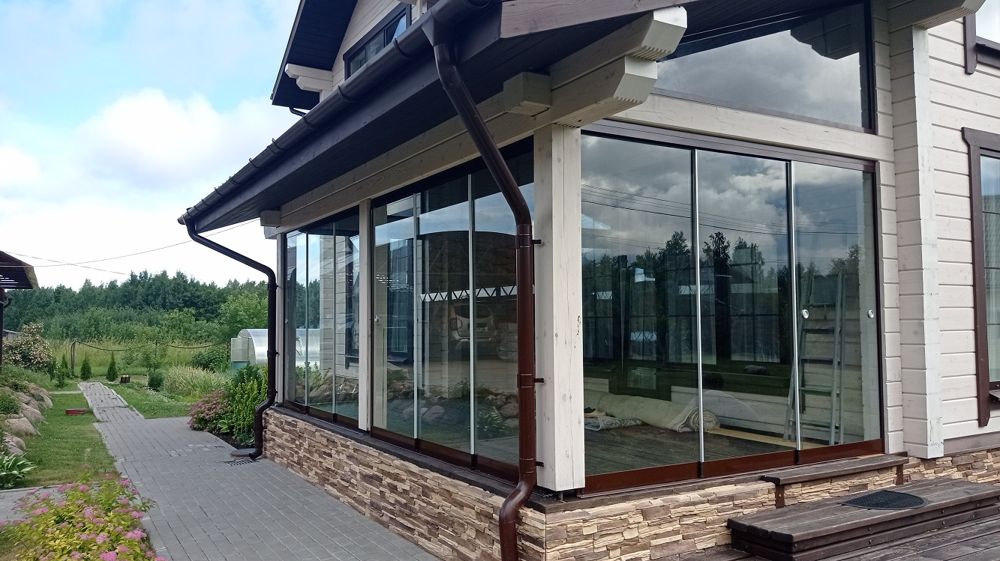

GLASKERAMIKA · Санкт-ПетербургБезрамное остекление.
Безрамное остекление.
Для вашей террасы.
Проектируем, изготавливаем и устанавливаем раздвижное остекление в Санкт-Петербурге. Для террас, веранд, беседок и ресторанов.
Рассчитать остекление
ПРИМЕРЫ РЕШЕНИЙВид снаружи.
Вид снаружи.
Пространство внутри.
Подберём конструкцию под проём и назначение помещения. В портфолио можно рассмотреть остекление в разных объектах и обсудить решение для своей террасы.
Обсудить мой объект